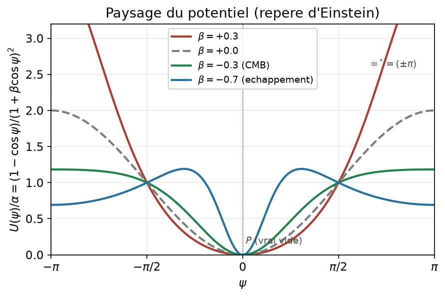
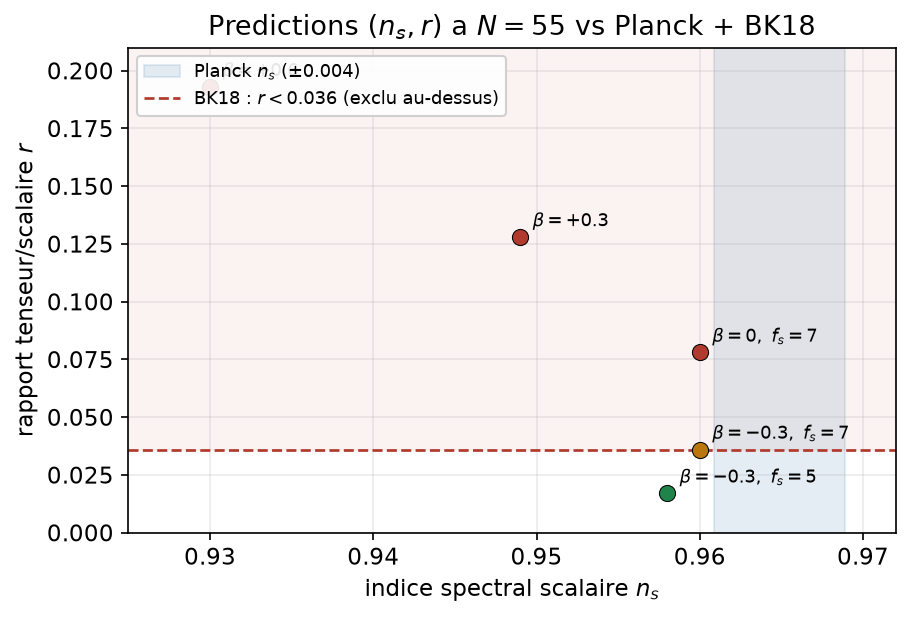
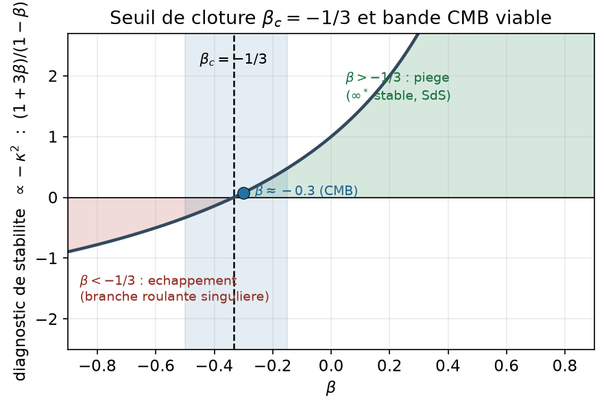

Unité 2 — Un champ de dualité d'échelle compactifié : régularisation et inflation
Note liminaire.
Le présent travail procède d’une intuition de départ — la compactification de l’axe d’échelle en un cercle — élaborée de manière autonome, sans connaissance de la littérature cosmologique afférente. Le recensement bibliographique n’a été entrepris qu’une fois le cadre établi ; il en ressort que certains secteurs recoupent des résultats publiés, notamment l’inflation naturelle à couplage non minimal périodique proportionnel au potentiel [14], son extension scalaire-tenseur [16] et les analyses \((n_s,r,\text{running})\) face à BICEP/Keck [17]. Ces recoupements, non anticipés, illustrent une convergence indépendante ; nous les citons explicitement afin de positionner honnêtement l’apport propre de ce travail, qui réside dans le cadrage unifié d’un même champ d’échelle (régimes trou noir et cosmologique) et la lecture topologique du secteur statique.
Introduction
Contexte et motivation physique
Deux exigences pèsent sur toute physique du régime de Planck : faire disparaître les singularités de la relativité générale, et rendre compte de la phase d’expansion accélérée primordiale. Les métriques de trou noir régulier [1, 2, 3] montrent qu’une singularité centrale peut être remplacée par un cœur de Sitter de courbure finie (\(w=-1\)), au prix d’une violation de la condition d’énergie forte autorisée par les théorèmes de singularité [4, 5]. Symétriquement, l’inflation [6, 7] requiert un champ scalaire roulant lentement dans un potentiel plat. La question structurante est de savoir si un même ingrédient fondamental engendre ces deux phénomènes, plutôt que de les postuler séparément.
Le cadre de dualité d’échelle compactifiée [15] propose un tel ingrédient. Son hypothèse centrale est que l’axe d’échelle logarithmique \(u=\ln(\lambda/\ell_P)\), habituellement non compact, est en réalité un cercle : par projection stéréographique \(\psi=2\arctan u\in(-\pi,\pi]\), l’échelle de Planck (\(\psi=0\), pôle \(P\)) et une échelle « unifiée » (\(\psi=\pm\pi\) identifiés, pôle \(\infty^*\)) deviennent deux pôles d’une même variété. Le champ d’échelle \(\psi\) se couple non minimalement à la courbure.
État de l’art et lacune
Les cœurs de Sitter réguliers sont, dans la littérature, des ansätze géométriques : la source \(w=-1\) est introduite à la main [1, 2, 3]. Les théorèmes de non-chevelure [8] contraignent fortement les champs scalaires statiques autour des horizons. Côté cosmologie, l’inflation naturelle [7] est sous tension : Planck\(+\)BICEP/Keck [10, 11] repoussent son rapport tenseur/scalaire \(r\) au-delà des bornes pour des constantes de désintégration accessibles, tandis que les couplages non minimaux à la Higgs [9] abaissent \(r\). La lacune comblée est l’étude d’un champ fondamental dont le couplage non minimal n’est pas libre mais verrouillé par la même structure trigonométrique que le potentiel, examiné simultanément dans les régimes trou noir et cosmologique.
Contributions
Nous établissons quatre résultats : (1) un cœur de Sitter exact et un seuil de stabilité exact \(\beta_c=-1/3\) (Théorème 1) ; (2) la clôture du secteur statique — \(\psi\equiv-\pi\) est exactement Schwarzschild–de Sitter et la branche roulante est singulière, d’où aucun trou noir régulier (Résultat 1) ; (3) l’identification du secteur cosmologique à une inflation naturelle à couplage verrouillé, avec prédictions \((n_s,r)\), \(\alpha\) fixé et running, et première contrainte sur \(\beta\) (Résultat 2) ; (4) une charge d’échelle topologique (\(\pi_1(S^1)=\mathbb{Z}\)) dont le secteur statique est un demi-soliton non protégé (Résultat 3).
Cadre formel
Postulats et définitions
Postulat 1 (compactification). La variété fondamentale est \(\mathcal{M}=M_{3+1}\times S^1_\psi\times S^1_\chi\), les axes d’échelle étant des cercles via \(\psi=2\arctan[\ln(\lambda/\ell_P)]\). Les pôles \(\psi=\pm\pi\) sont identifiés (\(\infty^*\)) ; \(\psi=0\) est le point de Planck \(P\).
Postulat 2 (symétrie et régularité). L’action est invariante sous le groupe de Klein \(G=\mathbb{Z}_2\times\mathbb{Z}_2\) agissant par \((\psi,\chi)\mapsto(-\psi,-\chi)\), et toutes ses fonctions sont bornées sur le cercle (d’où \(\cos\psi\) plutôt que \(\cosh u\)).
En unités de Planck réduites (\(M_{\mathrm{Pl}}=1\), \(\hbar=c=1\), signature \(-+++\)) et en gelant l’axe temporel \(\chi\equiv0\) : \[\begin{equation} S=\int d^4x\,\sqrt{-g}\Big[\tfrac12 f(\psi)R-\tfrac12\omega(\partial\psi)^2-V(\psi)\Big], \quad f=1+\beta\cos\psi,\quad V=\alpha(1-\cos\psi), \end{equation}\] avec \(\omega=f_s^2>0\), \(|\beta|<1\), \(\alpha>0\). On a \(V(0)=0\) (minimum, \(P\)) et \(V(-\pi)=2\alpha\) (maximum, \(\infty^*\)).
Construction mathématique
[preuve] (vérifié par calcul formel) La variation donne le système scalaire-tenseur \[\begin{equation} f\,G_{\mu\nu}=\omega\,\partial_\mu\psi\,\partial_\nu\psi -g_{\mu\nu}\big[\tfrac12\omega(\partial\psi)^2+V\big]+\nabla_\mu\nabla_\nu f-g_{\mu\nu}\Box f, \qquad \omega\,\Box\psi=V'(\psi)-\tfrac12 f'(\psi)R. \end{equation}\] Dans le repère de Jordan, on emploie la métrique statique \(ds^2=-e^{2\Phi}dt^2+e^{2\Lambda}dr^2+r^2d\Omega^2\) et la métrique FLRW \(ds^2=-dt^2+a^2d\mathbf{x}^2\). Au repère d’Einstein (\(\tilde g=f g\)), l’action devient celle d’un champ canonique, avec \[\begin{equation} U(\psi)=\frac{V}{f^2},\qquad K(\psi)=\frac{\omega}{f}+\frac32\Big(\frac{f'}{f}\Big)^2, \qquad d\varphi=\sqrt{K}\,d\psi. \end{equation}\]
Propriétés structurelles
[preuve] (établies dans [15]) (i) L’action est finie partout, \(\infty^*\) inclus. (ii) La symétrie \(\mathbb{Z}_2\times\mathbb{Z}_2\) interdit le mélange \(\psi\chi\) : matrice de masse diagonale, aucun mode de Goldstone (impossible pour une symétrie discrète). (iii) Au vide symétrique \(P\), \(V=0\) donc \(\Lambda=0\). (iv) Aux champs gelés, la gravité d’Einstein émerge avec \(G_{\mathrm{eff}}=1/(8\pi f)\), bornée entre \(G/(1+\beta)\) (\(P\)) et \(G/(1-\beta)\) (\(\infty^*\)) : le signe naturel du couplage est \(\beta\ge0\).
(v) [preuve] (B1) La métrique d’espace de champ \(K(\psi)\) du repère d’Einstein est définie positive \(\Leftrightarrow f>0\Leftrightarrow\beta\in(-1/2,+1/2)\) : elle est la somme d’une partie cinétique (\(\omega/f\)) définie positive et d’une partie non minimale \(\tfrac32(f'/f)^2\) semi-définie positive (rang 1). Le couplage non minimal ne peut donc qu’ajouter de la positivité — il ne crée jamais de fantôme. À \(\beta=-1/2\), \(f\to0\) au vide \(P\) (le repère d’Einstein dégénère) : la bande est ouverte.
Résultats principaux
Cœur de Sitter exact et seuil de stabilité \(\beta_c=-1/3\)
Sur la métrique statique, \(R\) est éliminé par la trace de l’équation tensorielle ; [preuve] les trois résidus (\(tt\), \(rr\), scalaire) sont alors exactement linéaires en \((\Lambda',\Phi',\psi'')\) (Annexe A).
Théorème 1 (cœur de Sitter et seuil de couplage). Au pôle \(\infty^*\) (\(\psi=-\pi\), \(\psi'=0\)), la source se réduit à une énergie de vide pure et l’espace-temps est localement de Sitter : \[\begin{equation} H^2=\frac{2\alpha}{3(1-\beta)},\qquad K=R_{\mu\nu\rho\sigma}R^{\mu\nu\rho\sigma}=24H^4\ (\text{fini}), \qquad \rho=2\alpha,\ \ p_r=-2\alpha,\ \ w=-1. \end{equation}\] La fluctuation radiale \(\psi=-\pi+\delta\) obéit à \(\omega\Box\delta=\kappa^2\omega\delta\) avec \(\kappa^2=\alpha(1+3\beta)/[\omega(\beta-1)]\). Comme \(|\beta|<1\), \(\infty^*\) est radialement stable (piégé) pour \(\beta>-1/3\) et instable (échappement) pour \(\beta<-1/3\), avec le seuil exact \(\boxed{\beta_c=-1/3}\).
Note (réduction).
Ce seuil \(\beta_c=-1/3\) est propre à la réduction mono-axe statique (\(\chi\) gelé). Un traitement cosmologique à deux champs le long de la diagonale \(\psi=\chi\) déplace le seuil à \(-1/6\) ; la conclusion de clôture (aucun trou noir régulier statique) est robuste indépendamment de la réduction.
Conséquence 1 (obstruction de Derrick). Pour le signe naturel \(\beta\ge-1/3\), le champ ne peut connecter \(\infty^*\) au vide : l’énergie de gradient étant positive, le maximum de \(V\) devient un minimum du potentiel mécanique effectif \(-V\), et le champ y reste piégé. La fenêtre d’échappement \(\beta<-1/3\) n’existe que par le terme non minimal \(\tfrac12 f'R\).
Clôture du secteur statique en coordonnées d’Eddington–Finkelstein
La carte statique se termine à un horizon (\(e^{-2\Lambda}\to0\)) ; [numérique] l’intégration sortante depuis le cœur montre, dans les deux régimes, qu’un horizon se forme exactement au rayon de Sitter \(r_H=1/H=\sqrt{3(1-\beta)/(2\alpha)}\) (rapport numérique/théorie \(=1{,}0000\)). Pour traverser, on passe à la carte entrante \(ds^2=-A\,dv^2+2B\,dv\,dr+r^2d\Omega^2\), régulière tant que \(B\) reste fini (Annexe A).
Résultat 1 (aucun trou noir régulier). [preuve] \(\psi\equiv-\pi\) est solution exacte : \(A(r)=1-2M/r-H^2r^2\), \(B\equiv1\) (Schwarzschild–de Sitter). Le régime piégé \(\beta>-1/3\) est donc asymptotiquement de Sitter, non un trou noir asymptotiquement plat. [numérique] Dans le régime d’échappement \(\beta<-1/3\), le champ roule de \(-\pi\) vers \(0\), mais \(B=e^{\Phi+\Lambda}\) s’effondre vers \(0\) au rayon de Sitter putatif : la masse de Misner–Sharp \(m=(r/2)(1-A/B^2)\) devient négative et le scalaire de Ricci diverge à rayon fini. Aucune solution statique sphérique n’interpole un cœur de Sitter régulier et un extérieur asymptotiquement plat.
| \(r\) | \(\psi\) | \(m\) (Misner–Sharp) | \(g_{rr}=A/B^2\) | \(|R|\) (Ricci) |
|---|---|---|---|---|
| \(0{,}01\) | \(-3{,}132\) | \(+5\times10^{-10}\) | \(1{,}00\) | \(10^{-2}\) |
| \(47{,}1\) | \(-1{,}4\) | \(-3\times10^{7}\) | \(1{,}3\times10^{6}\) | \(6\times10^{11}\) |
| \(75{,}5\) | \(-0{,}002\) | \(-10^{56}\) | \(3\times10^{54}\) | \(10^{73}\) |
Le secteur cosmologique : inflation naturelle à couplage verrouillé
En cosmologie homogène, le gradient devient temporel : \((\partial\psi)^2=-\dot\psi^2\). [preuve] La courbure du potentiel en \(\infty^*\) est \(V''(-\pi)=-\alpha<0\) : \(\infty^*\) est un sommet instable, d’où le champ dévale vers \(P\) (Fig. 1).

Résultat 2 (inflation naturelle, prédictions, \(\alpha\) fixé et contrainte sur \(\beta\)). Avec le champ canonique \(\varphi=f_s\psi\), le potentiel s’écrit \(V=\alpha[1-\cos(\varphi/f_s)]\) : c’est l’inflation naturelle [7] de constante \(f_s\), dotée d’un couplage non minimal verrouillé \(f=1+\beta\cos\psi\) (même \(\beta\) que la gravité) ; cette structure périodique a été étudiée indépendamment par [14, 16]. [numérique] L’intégration FLRW part de \(\infty^*\) (phase de Sitter, \(H^2=2\alpha/[3(1-\beta)]\), identique à l’échelle du cœur de la Résultat 1) et roule jusqu’à \(P\) (\(\Lambda=0\)), avec sortie gracieuse. Les prédictions de roulement lent au repère d’Einstein (Table 2) donnent : pour \(\beta\ge0\), \(r\gtrsim0{,}08\) (exclu) ; pour \(\beta\approx-0{,}3\), \(r\approx0{,}02\)–\(0{,}05\) et \(n_s\approx0{,}96\) (au bord). Les données CMB constituent la première contrainte sur \(\beta\) dans ce cadre.
| \(\beta\) | \(f_s\) (\(M_{\mathrm{Pl}}\)) | \(n_s\) | \(r\) | statut |
|---|---|---|---|---|
| \(0\) (naturel) | \(7\) | \(0{,}960\) | \(0{,}078\) | \(r\) trop grand |
| \(+0{,}3\) | \(7\) | \(0{,}949\) | \(0{,}128\) | exclu |
| \(+0{,}6\) | \(7\) | \(0{,}930\) | \(0{,}193\) | exclu |
| \(-0{,}3\) | \(5\) | \(0{,}958\) | \(0{,}017\) | compatible |
| \(-0{,}3\) | \(7\) | \(0{,}960\) | \(0{,}036\) | au bord |

[numérique] (A1) \(\alpha\) fixé et running. Le roulement lent au second ordre avec la métrique d’espace de champ \(K(\psi)\) reproduit la Table 2 à mieux que \(0{,}5\%\), et fixe \(\alpha\) par l’amplitude scalaire \(A_s=2{,}1\times10^{-9}\) : \(\alpha\approx0{,}5\)–\(1{,}2\times10^{-9}\,M_{\mathrm{Pl}}^4\) (cas central \(\beta=-0{,}3\), \(f_s=7\) : \(\alpha=1{,}18\times10^{-9}\)), soit une échelle d’inflation \(V^{1/4}\sim1\)–\(2\times10^{16}\) GeV (GUT). Prédiction stable sur la bande : le running \(dn_s/d\ln k\approx-6{,}5\times10^{-4}\) — compatible avec Planck (\(-0{,}004\pm0{,}007\)), sous le seuil actuel, possiblement accessible à la prochaine génération, mais non distinctif : il appartient à la classe [14, 16, 17]. Reliquat [ouvert] : résolution mode-par-mode de Mukhanov–Sasaki, attendue au sous-pourcent.
Statut de la signature \(\Delta\sim0{,}044\).
[numérique] La trajectoire de fond est monotone (demi-période du cosinus) : le spectre primordial est lisse, sans caractéristique log-périodique. La signature \(\Delta\sim0{,}044\) évoquée dans [15] n’est pas reproduite par la dynamique minimale ; elle exigerait un mécanisme supplémentaire (trajectoire enroulée \(N\ge1\), ou axe \(\chi\) non gelé). [ouvert]
Charge d’échelle topologique et demi-soliton
Le champ \(\psi\) étant à valeurs dans \(S^1\), ses configurations sont classées par \(\pi_1(S^1)=\mathbb{Z}\). [preuve] Dans la réduction effective à \(1{+}1\) D, le courant \(j^\mu=(1/2\pi)\varepsilon^{\mu\nu}\partial_\nu\psi\), de charge \(N=(1/2\pi)(\psi_f-\psi_i)\), est conservé identiquement (\(\partial_\mu j^\mu\equiv0\)), indépendamment des équations du mouvement, de la métrique, de \(f\) et de \(V\). Sur le cercle, \(V=2\alpha\sin^2(\psi/2)\) est un sine-Gordon à vide unique. La charge est entière ssi les deux extrémités reposent sur le vide \(P\).
Résultat 3 (demi-soliton non protégé). [preuve] Le profil de la Résultat 1, reliant le cœur \(\psi(0)=-\pi\) (\(\infty^*\)) à l’asymptotique \(\psi(\infty)=0\) (\(P\)), porte la charge \(N=\tfrac12\). Une extrémité gisant sur le maximum de \(V\), il n’est pas protégé : l’arc \(\infty^*\!\to P\) est contractible, et sa contraction coïncide avec le « roulement ». La clôture du secteur statique s’en déduit sans intégration. L’unique charge entière non triviale (\(\psi:0\to2\pi\)) est le soliton \(N=1\), de masse de Bogomol’nyi \(M_{N=1}=8\sqrt{\omega\alpha}\) (Annexe D).
Lien observationnel.
[conjecture] En cosmologie, \(N\) compte les périodes parcourues par l’inflaton. La trajectoire monotone (\(N=\tfrac12\)) donne un spectre lisse ; une trajectoire enroulée (\(N\ge1\), traversant \(\infty^*\)) serait la seule source d’oscillations log-périodiques. Le test est une résolution de Mukhanov–Sasaki sur un fond \(N\ge1\).
Implications physiques
Interprétation
Le même champ d’échelle est bénin dans le temps et obstrué dans l’espace. En cosmologie, \(\infty^*\) est une colline d’où le champ roule : il engendre l’inflation et une sortie naturelle vers \(\Lambda=0\). En statique, \(\infty^*\) est un puits : le champ y reste piégé et l’espace-temps n’est qu’un Schwarzschild–de Sitter. Le fait remarquable est que la même échelle de Sitter \(H^2=2\alpha/[3(1-\beta)]\) apparaît comme horizon cosmologique du cœur statique et comme taux de Hubble inflationnaire : signature de l’origine commune des deux phénomènes.
Limitations et honnêteté épistémique
(i) La clôture (Résultat 1) ne concerne que les configurations statiques sphériques ; un effondrement dynamique pourrait produire un cœur régulier transitoire (traité en travail compagnon). (ii) Les prédictions (Résultat 2) reposent sur le roulement lent ; \(\alpha\) est fixé par \(A_s\) sur cette base validée (running \(-6{,}5\times10^{-4}\)), un traitement Mukhanov–Sasaki mode-par-mode restant un raffinement sous-pourcent (non un préalable). (iii) La signature \(\Delta\sim0{,}044\) n’est pas établie. (iv) Les constantes \(\alpha,\beta,f_s\) ne sont pas dérivées de premiers principes ; \(\beta\) est seulement contraint par les données. Aucun de ces points n’est présenté comme résolu. [ouvert]
Protocoles expérimentaux
Test discriminant principal : le rapport tenseur/scalaire
Le modèle prédit, dans sa fenêtre viable (\(\beta\approx-0{,}3\), \(f_s\approx5\)–\(7\,M_{\mathrm{Pl}}\), \(N=50\)–\(60\)), un rapport \(r\approx0{,}02\)–\(0{,}05\) corrélé à \(n_s\approx0{,}96\). La mesure de \(r\) par LiteBIRD [12] et Simons Observatory [18], de sensibilité \(\sigma(r)\sim10^{-3}\), est le test discriminant1 : une non-détection à \(r<0{,}01\) exclurait le modèle ; une détection à \(r\sim0{,}03\) avec \(n_s\approx0{,}96\) le corroborerait.
La signature propre : cohérence inter-secteurs
[le test qui distingue ce cadre] Aucun observable cosmologique isolé (\(n_s\), \(r\), running) ne distingue ce modèle de l’inflation naturelle non minimale [14, 16, 17]. Sa signature propre est une corrélation : le signe et la valeur de \(\beta\) préférés par le CMB (\(\beta\approx-0{,}3\)) doivent être confrontés au secteur trou noir, où le seuil \(\beta_c=-1/3\) gouverne la stabilité du cœur de Sitter. Une même valeur de \(\beta\) doit ajuster \((n_s,r)\) et se situer du bon côté du seuil de clôture. Une tension persistante entre les deux secteurs serait un échec structurel ; leur accord serait la véritable corroboration du cadre unifié.

Falsifiabilité et bornes
Le modèle vit dans une bande étroite du plan \((n_s,r)\). Bornes actuelles : \(\beta\ge0\) déjà exclu (\(r\gtrsim0{,}08>0{,}036\)) ; \(\beta\lesssim-0{,}6\) exclu (inflation insuffisante). Seule survit la bande \(-0{,}5\lesssim\beta\lesssim-0{,}15\), entièrement testable à l’horizon 2030.
Discussion et comparaison
Rapport avec les approches concurrentes
Contrairement aux trous noirs réguliers phénoménologiques [1, 2, 3], où la source \(w=-1\) est postulée, nous dérivons le cœur de Sitter d’une action et montrons qu’il ne se raccorde pas à un extérieur plat en statique — en accord avec l’esprit des théorèmes de non-chevelure [8]. Pour l’inflation, le couplage non minimal verrouillé distingue le modèle de l’inflation naturelle nue [7] et de l’inflation à la Higgs [9] : le couplage n’est pas libre mais fixé par la même structure que le potentiel, ce qui transforme un paramètre d’ajustement en une grandeur contrainte par la gravité. La structure périodique elle-même rejoint [14, 16], dont nous nous distinguons par le cadrage inter-secteurs.
Questions ouvertes
Quatre directions, hors du champ du présent travail [ouvert] : (i) la corrélation \(\beta(\mathrm{CMB})=\beta(\text{cl\^oture})\) — posée en signature au § V.B — mérite une étude conjointe quantitative ; (ii) la résolution mode-par-mode de Mukhanov–Sasaki pour confirmer \((n_s,r,\text{running})\) au sous-pourcent ; (iii) l’origine éventuelle d’oscillations log-périodiques via une trajectoire multi-périodes (\(N\ge1\)) ou l’axe temporel \(\chi\) non gelé ; (iv) le secteur dynamique d’effondrement gravitationnel, seule avenue restante pour une régularisation de trou noir (travail compagnon).
Conclusion
Un unique champ de dualité d’échelle, traité dans deux régimes, produit deux verdicts opposés et tous deux instructifs. En statique, il échoue à régulariser la singularité : le pôle unifié engendre un cœur de Sitter exact mais inévitablement gelé (Schwarzschild–de Sitter) ou singulier, et aucun trou noir régulier n’existe — avec un seuil exact \(\beta_c=-1/3\) comme sous-produit. En cosmologie, le même champ engendre une inflation naturelle à couplage verrouillé, prédictive et falsifiable, dont \(\alpha\) est fixé (échelle GUT) et qui prédit un running \(dn_s/d\ln k\approx-6{,}5\times10^{-4}\). La signature propre du cadre n’est pas un observable cosmologique isolé, mais la corrélation \(\beta(\mathrm{CMB})=\beta(\text{cl\^oture})\). Le programme se réoriente d’une théorie de trous noirs vers une théorie de l’histoire cosmologique, pour la première fois testable par l’observation.
Remerciements.
L’auteur remercie les outils de calcul formel et numérique (SymPy, SciPy) qui ont permis la vérification systématique de chaque étape, et la communauté gr-qc/hep-th pour les standards de rigueur et de falsifiabilité qui ont guidé ce travail. La formalisation a été conduite en dialogue avec des systèmes d’assistance analytique, sous la direction de l’auteur, à qui revient l’entière responsabilité du contenu scientifique.
Détails techniques
Système statique. Avec l’élimination de \(R\) par la trace, les résidus (\(tt\)), (\(rr\)) et scalaire sont linéaires en \((\Lambda',\Phi',\psi'')\) et résolus ponctuellement par inversion \(3\times3\) ; le tenseur d’Einstein mixte est validé contre le vide de Schwarzschild. Carte d’Eddington–Finkelstein. Pour \(ds^2=-A\,dv^2+2B\,dv\,dr+r^2d\Omega^2\), on a \(g_{vv}=0\), \(g_{vr}=1/B\), \(g_{rr}=A/B^2\), \(\sqrt{-g}=Br^2\), et \(G_{rr}=2B'/(rB)\). Le système \(3\times3\) pour \((A',B',\psi'')\) est linéaire (résidu de linéarité exactement nul). L’horizon est une surface caractéristique (\(g_{rr}=A/B^2\to0\)) ; la régularité impose \(\Pi(r_H)=0\) avec \(\Pi=(Ar^2/B)\psi'\). Cosmologie. Le fond FLRW résout la contrainte de Friedmann \(3fH^2=\tfrac12\omega\dot\psi^2+V-3H\dot f\) et l’équation d’accélération.
Vérifications dimensionnelles
En unités \(\hbar=c=1\), \(M_{\mathrm{Pl}}=1\) : \([\alpha]=[V]=\ell_P^{-4}\), \([H^2]=\ell_P^{-2}\), cohérent avec \(H^2=2\alpha/[3(1-\beta)]\) car \(f\) porte la dimension \(M_{\mathrm{Pl}}^2\) (\(f(-\pi)=(1-\beta)M_{\mathrm{Pl}}^2\)), d’où \([H^2]=[\alpha]/M_{\mathrm{Pl}}^2=\ell_P^{-2}\). \(\beta\) et \(\psi\) sont sans dimension ; \(f_s\) a la dimension de \(M_{\mathrm{Pl}}\). \(K=24H^4\) a la dimension \(\ell_P^{-4}\), attendue pour \(R_{\mu\nu\rho\sigma}R^{\mu\nu\rho\sigma}\).
Comparaison quantitative à la littérature
Pour l’inflation naturelle nue (\(\beta=0\)), nos valeurs (\(n_s=0{,}960\), \(r=0{,}078\) à \(f_s=7\,M_{\mathrm{Pl}}\), \(N=55\)) reproduisent les résultats standard [7, 10] et confirment la tension connue avec [11]. L’effet du couplage verrouillé (\(\beta<0\) abaisse \(r\) ; \(\beta>0\) l’augmente) est analogue en sens à l’effet d’un couplage non minimal à la Higgs [9], mais de magnitude contrôlée par l’unique paramètre gravitationnel \(\beta\). Le running prédit (\(\approx-6{,}5\times10^{-4}\)) est cohérent avec les analyses \((n_s,r,\text{running})\) de cette classe [17]. Le cœur de Sitter (\(w=-1\), \(K=24H^4\)) coïncide avec la structure interne des trous noirs réguliers [2, 3], mais sans le raccordement asymptotiquement plat que ces modèles postulent.
Courant topologique et borne de Bogomol’nyi
Pour \(\psi\in S^1\), \(j^\mu=(1/2\pi)\varepsilon^{\mu\nu}\partial_\nu\psi\) vérifie \(\partial_\mu j^\mu\equiv0\) par antisymétrie, sans usage des équations du mouvement ; \(N=(1/2\pi)\oint d\psi\) est un invariant d’homotopie. L’énergie statique plate \(E=\int[\tfrac12\omega\psi'^2+V]dr\) admet la borne \(E\ge\int\sqrt{2\omega V}\,|d\psi|\), saturée pour \(\sqrt\omega\,\psi'=\sqrt{2V}\), soit le kink \(\psi(r)=4\arctan e^{\sqrt{\alpha/\omega}(r-r_0)}\), de largeur \(\sim\sqrt{\omega/\alpha}\), et \(M_{N=1}=2\sqrt{\omega\alpha}\int_0^{2\pi}|\sin(\psi/2)|\,d\psi=8\sqrt{\omega\alpha}\). Le demi-soliton (\(\psi:-\pi\to0\)) a une énergie \(4\sqrt{\omega\alpha}\) mais relie le maximum au vide : il n’est pas BPS et se contracte (§ III.D).
Reproductibilité
Les résultats numériques et la vérification symbolique sont reproduits par deux scripts autonomes (NumPy/SymPy/SciPy/Matplotlib), aux sections codées pour être propres à ce document :
géométrie en repère d’Einstein (\(U=V/f^2\), \(K=\omega/f+\tfrac32(f'/f)^2\)) et positivité \(K>0\Leftrightarrow f>0\Leftrightarrow|\beta|<1\) (mono-axe).
seuil de clôture : signe de \(\kappa^2=\alpha(1+3\beta)/[\omega(\beta-1)]\), racine exacte \(\beta_c=-1/3\).
cœur de Sitter : \(H^2=2\alpha/[3(1-\beta)]\), \(r_H=1/H\), Kretschmann \(=24H^4\).
inflation : \((n_s,r)\) à \(N=55\) (roulement lent, métrique \(K\)) — reproduit la Table 2 ; \(\alpha\) fixé par \(A_s\) (\(V^{1/4}\approx1{,}4\times10^{16}\) GeV), running.
topologie : charge \(N\), soliton \(M_{N=1}=8\sqrt{\omega\alpha}\), demi-soliton \(4\sqrt{\omega\alpha}\).
Fichiers : U2_GRAV_reproductible.py (calculs) et
Gravite_figures.py (Fig. 1–3). Convention : \(\alpha\) s’annule dans les rapports \((n_s,r)\) et ne fixe que l’échelle absolue
; \(M_{\mathrm{Pl}}=1\) sauf mention
contraire. Le préfixe U2_GRAV_ et les codes
[G\(\cdot\)]
sont spécifiques à ce document.
99 J. M. Bardeen, Non-singular general-relativistic gravitational collapse, Proc. GR5 (Tbilisi, 1968), p. 174. S. A. Hayward, Phys. Rev. Lett. 96, 031103 (2006). I. Dymnikova, Gen. Relativ. Gravit. 24, 235 (1992). R. Penrose, Phys. Rev. Lett. 14, 57 (1965). S. W. Hawking & G. F. R. Ellis, The Large Scale Structure of Space-Time (Cambridge Univ. Press, 1973). A. H. Guth, Phys. Rev. D 23, 347 (1981). K. Freese, J. A. Frieman & A. V. Olinto, Phys. Rev. Lett. 65, 3233 (1990). J. D. Bekenstein, Phys. Rev. D 51, R6608 (1995). F. L. Bezrukov & M. Shaposhnikov, Phys. Lett. B 659, 703 (2008). Planck Collaboration (Y. Akrami et al.), Astron. Astrophys. 641, A10 (2020). BICEP/Keck Collaboration (P. A. R. Ade et al.), Phys. Rev. Lett. 127, 151301 (2021). LiteBIRD Collaboration (E. Allys et al.), Prog. Theor. Exp. Phys. 2023, 042F01 (2023). K. N. Abazajian et al. (CMB-S4), CMB-S4 Science Book, arXiv:1610.02743 (2016) — projet arrêté en juillet 2025. R. Z. Ferreira, A. Notari & G. Simeon, J. Cosmol. Astropart. Phys. 11 (2018) 021, arXiv:1806.05511. H. Bakkaoui, Compactification de dualité d’échelle : cadre, corrections et résultats, recueil v1.1 (2026). G. Simeon, Scalar-tensor extension of Natural Inflation, arXiv:2002.07625 (2020). I. D. Bostan, Non-minimally coupled Natural Inflation and BICEP/Keck constraints, arXiv:2209.02434 (2022). Simons Observatory Collaboration (P. Ade et al.), J. Cosmol. Astropart. Phys. 02 (2019) 056, arXiv:1808.07445.
Le projet CMB-S4 (DOE–NSF), longtemps considéré comme l’instrument de référence pour ce test, a été arrêté : le 9 juillet 2025, le DOE et la NSF ont déclaré ne plus pouvoir soutenir le projet (arrêt ordonné), qui n’est donc plus financé [13]. La falsifiabilité de la prédiction demeure, portée par Simons Observatory (Chili, en service), LiteBIRD (lancement visé \(\sim\)2032, conçu pour \(\sigma(r)<10^{-3}\)) et BICEP/Keck (en cours). [à vérifier]↩︎